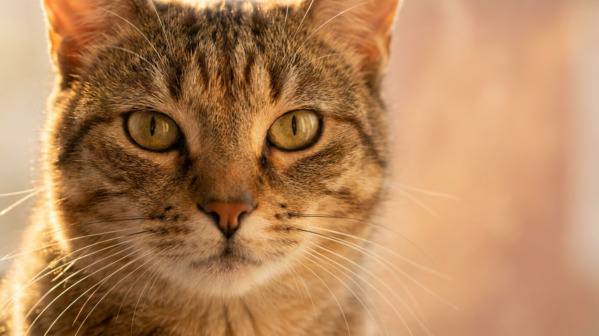

Состав корма на этикетке: 5 строк, которые решают всё

15 июня 2026 · 3 минуты чтения · Питание · Быт · Универсально
Берёте пакет корма — и видите три абзаца мелкого текста на обороте. Большинство владельцев смотрит только на картинку с курицей на лицевой стороне. Но именно в составе написано, за что вы платите. Пять минут с этикеткой — и выбор корма перестаёт быть лотереей.
Ингредиенты идут по убыванию массы — это главное правило
Производитель обязан перечислять ингредиенты от большего к меньшему по весу до приготовления. Первые три позиции — это и есть основа корма. Если первым стоит конкретный источник белка (курица, индейка, лосось, говядина) — хороший знак. Если первым идут злаки или кукурузная крупа — корм строится на углеводной базе, а не на животном белке.
Правило работает для кошек и собак одинаково: смотрите, что стоит на первом месте, на втором, на третьем. Это и есть корм по сути.
Мясо, мясная мука, субпродукты — не одно и то же
- Свежее мясо (курица, индейка, говядина) — высокое содержание влаги, после сушки масса уменьшается в 3–4 раза. Качественное сырьё, но реальная доля белка в готовом продукте меньше, чем кажется по позиции в списке.
- Мясная мука (chicken meal, salmon meal) — сухой концентрат: влага уже удалена, белка по весу больше, чем в свежем мясе. Это не плохо — это другой формат. Мука из конкретного вида (куриная мука) надёжнее, чем просто «мясная мука» без уточнения источника.
- Субпродукты — лёгкие, печень, сердце, почки. Сами по себе не плохи: печень богата нутриентами, сердце — таурином. Плохо, когда состав написан просто «субпродукты» без указания животного — это непрозрачно.
- «Мясо и продукты животного происхождения» — размытая формулировка. Состав может меняться от партии к партии. Лучше, когда указан конкретный вид.
Гарантированный анализ: четыре числа, которые важны
На упаковке всегда есть таблица или строка с показателями — это гарантированный анализ (иногда «типичный состав»). Смотрите на четыре значения:
- Сырой протеин — для кошек желательно от 30–35% в сухом корме (кошки — облигатные плотоядные, им нужен высокий белок). Для собак — от 22–28%, зависит от активности.
- Сырой жир — источник энергии и жирорастворимых витаминов. Слишком низкий жир у кошки даёт тусклую шерсть, слишком высокий у малоподвижной собаки — лишний вес.
- Сырая клетчатка — норма до 3–5%. Выше — наполнитель, ниже — нет проблем. Помогает моторике кишечника.
- Влажность — у сухого корма до 10%, у влажного 75–85%. Нельзя сравнивать белок сухого и влажного корма напрямую — нужен пересчёт на сухое вещество.
Для кошек убедитесь, что в составе есть таурин. Кошки не синтезируют его сами, дефицит ведёт к нарушениям зрения и работы сердца. В качественных кормах таурин указан отдельной строкой.
Маркетинговые надписи, которые ничего не гарантируют
Слова «премиум», «натуральный», «с курицей», «для здоровья суставов» — маркетинг, не стандарт. Никакого регулируемого требования к составу за ними нет. «С курицей» может означать 4% курицы. «Натуральный» — юридически ничего не значит.
Проверяйте не обложку, а оборот: состав и гарантированный анализ.
Как сравнить два корма по делу
- Сравните первые три ингредиента. Конкретный белок vs размытая формулировка — победа у первого.
- Переведите оба состава на сухое вещество: разделите % белка на (100 − % влажности) × 100. Только тогда сухой и влажный корм сравнимы.
- Проверьте наличие таурина (для кошек) и L-карнитина (полезен активным собакам).
- Обратите внимание на список добавок: витамины и хелатные минералы в конце состава — норма, а не химия.
- Избегайте корма, где в первых позициях стоят неуточнённые злаки, «растительные субпродукты» или кукурузный сироп.
Материал носит информационный характер и не заменяет очную консультацию ветеринара.
🐾 Первая помощь — всегда под рукой
AnimaLife подскажет, что делать в тревожной ситуации с питомцем ещё до визита к врачу. Откройте в один тап.
Открыть AnimaLife → Открыть в MAX →
🐾 Понравился разбор?
Подпишитесь на канал — каждый день разбираем по одному тревожному симптому у кошек и собак: что в пределах нормы, а когда пора к врачу. Подпишитесь, чтобы не пропустить разбор, который может спасти здоровье вашего питомца.
← Все статьи · Открыть AnimaLife в Telegram · RSS